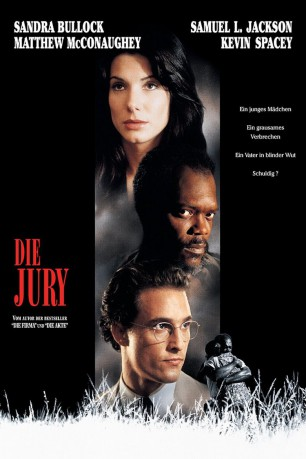

gesehen am 10.06.2015
gesehen am 10.06.2015Alternativ: A Time to Kill gesehen am 10.06.2015
 
 IMDB-Wertung: 7.4 / 10
IMDB-Wertung: 7.4 / 10  Metascore:
Metascore: 
In dem kleinen Mississippi-Städtchen Canton wird ein junger Anwalt (Matthew McConaughey) mit einem mörderischen Fall betraut, als nach der Vergewaltigung und dem Mord an einem farbigen Mädchen der Vater im Gerichtsgebäude Rache nimmt und die vermeintlichen Täter erschießt.Nun steht der Vater (Samuel L.Jackson) vor Gericht und der Klu-Klux-Klan in der Gegend wird ebenfalls wieder aktiv. Unterstützt von einer jungen Studentin (Sandra Bullock) gerät das Leben aller Beteiligten in Gefahr, als Anschläge verübt werden. Doch die größte Gefahr lauert vor Gericht, in Person des gewieften Staatsanwalts Buckley (Kevin Spacey)...
Jahr: 1996
Dauer: 149 Minuten
FSK: 12
Land: USA Studio: Warner Bros.Tonspuren: DD5.1 - ,
Untertitel:
Auflösung: 1080p (1920x800) Größe: 6758 MB
Regisseur:  Joel Schumacher
Joel Schumacher
Drehbuch: John Grisham, Akiva Goldsman
Soundtrack: Elliot Goldenthal
Darsteller:
 Matthew McConaughey als Jake Tyler Brigance
Matthew McConaughey als Jake Tyler Brigance Sandra Bullock als Ellen Roark
Sandra Bullock als Ellen Roark Samuel L. Jackson als Carl Lee Hailey
Samuel L. Jackson als Carl Lee Hailey Kevin Spacey als D.A. Rufus Buckley
Kevin Spacey als D.A. Rufus Buckley Oliver Platt als Harry Rex Vonner
Oliver Platt als Harry Rex Vonner Charles S. Dutton als Sheriff Ozzie Walls
Charles S. Dutton als Sheriff Ozzie Walls Brenda Fricker als Ethel Twitty
Brenda Fricker als Ethel Twitty Donald Sutherland als Lucien Wilbanks
Donald Sutherland als Lucien Wilbanks Kiefer Sutherland als Freddie Lee Cobb
Kiefer Sutherland als Freddie Lee Cobb Patrick McGoohan als Judge Omar Noose
Patrick McGoohan als Judge Omar Noose Ashley Judd als Carla Brigance
Ashley Judd als Carla Brigance John Diehl als Tim Nunley
John Diehl als Tim Nunley Chris Cooper als Deputy Dwayne Powell Looney
Chris Cooper als Deputy Dwayne Powell Looney Nicky Katt als Billy Ray Cobb
Nicky Katt als Billy Ray Cobb Doug Hutchison als James Louis 'Pete' Willard
Doug Hutchison als James Louis 'Pete' Willard Kurtwood Smith als Stump Sisson
Kurtwood Smith als Stump Sisson Tim Parati als Winston
Tim Parati als Winston Beth Grant als Cora Mae Cobb
Beth Grant als Cora Mae Cobb Joe Seneca als Reverend Isaiah Street
Joe Seneca als Reverend Isaiah Street Anthony Heald als Dr. Wilbert Rodeheaver
Anthony Heald als Dr. Wilbert Rodeheaver Terry Loughlin als Jury Foreman
Terry Loughlin als Jury Foreman Andy Stahl als Reluctant Male Juror
Andy Stahl als Reluctant Male Juror Byron Jennings als Brent Musgrove
Byron Jennings als Brent Musgrove Greg Lauren als Taylor
Greg Lauren als Taylor Mike Pniewski als Deputy Tatum
Mike Pniewski als Deputy Tatum Elizabeth Omilami als Woman Angry at Klan
Elizabeth Omilami als Woman Angry at Klan Octavia Spencer als Roark's Nurse
Octavia Spencer als Roark's Nurse Leonard L. Thomas als Man in Lumberyard
Leonard L. Thomas als Man in Lumberyard Steve Coulter als Klansman
Steve Coulter als Klansman M. Emmet Walsh als Dr. Willard Tyrell 'W.T.' Bass, the Defense Psychologist , uncredited
M. Emmet Walsh als Dr. Willard Tyrell 'W.T.' Bass, the Defense Psychologist , uncreditedDatei: X:\1996\Jury, Die (1996, FSK12, 1920x800).mkv seit 02.06.2015
Festplatte: HD 1996-2002
 Es gibt insgesamt 78 Filme in der Gruppe '1996'
Es gibt insgesamt 78 Filme in der Gruppe '1996'